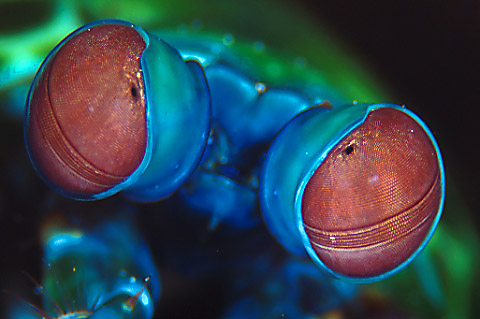
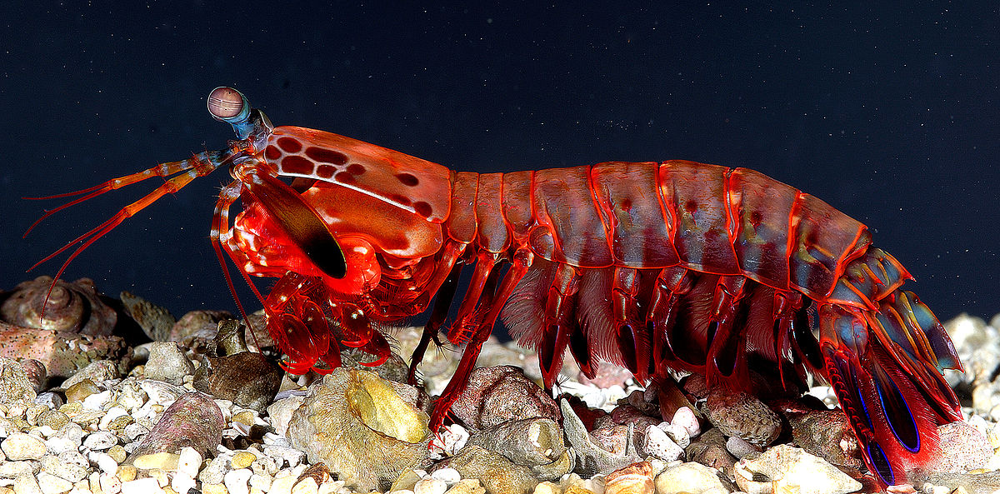

Fatos sobre o Stomatopoda
O stomatopoda, Odontodactylus scyllarus, é um crusáceo com algumas características impressionantes que o destacam em váris categorias. Para encontrá-los precisamos acessar as seguintes classificações:
- Reino: Animalia
- Filo: Arthropoda
- Subfilo: Crustacea
- Classe: Malacostraca
- Subclasse: Hoplocarida
- Ordem: Stomatopoda
Olhar 43
Enquanto nos meros olhos humanos conseguem enxergar milhares de cores distintas, todas elas derivam de apenas três cores básicas relacionadas aos cones diferenciadores de nossas retinas. Algumas outras espécies tem ainda menos que três e por isso não conseguem distinguir todas as cores que nós conhecemos, porém os Stomatopodas possuem impressionantes 16 cones em suas retinas , possibilitando uma combinação de cores e tons que são literalmente inimagináveis para nós e podem alcançar, inclusive, os espectros que nós chamamos de infravermelho e ultravioleta.
É um pássaro? É um avião?

Na frente de seus corpos os Stomatopoda possuem dois apendices, como um louva-deus, usados principalmente para atacar suas vítimas. No movimento de ataque eles são capazes de acelerar com tamanha velocidade que suas presas são atingidas com até 1500 Newton de força.
Sauna Pessoal
Através de um processo conhecido como supercavitação, os Stomatopodas são capazes de moverem os seus membros com tamanha velocidade que a água ao redor deles chega a ferver. O colapso das bolhsa resultantes desse processo emite uma onda de choque que pode matar as suas vítimas mesmo que ele erre a mira.